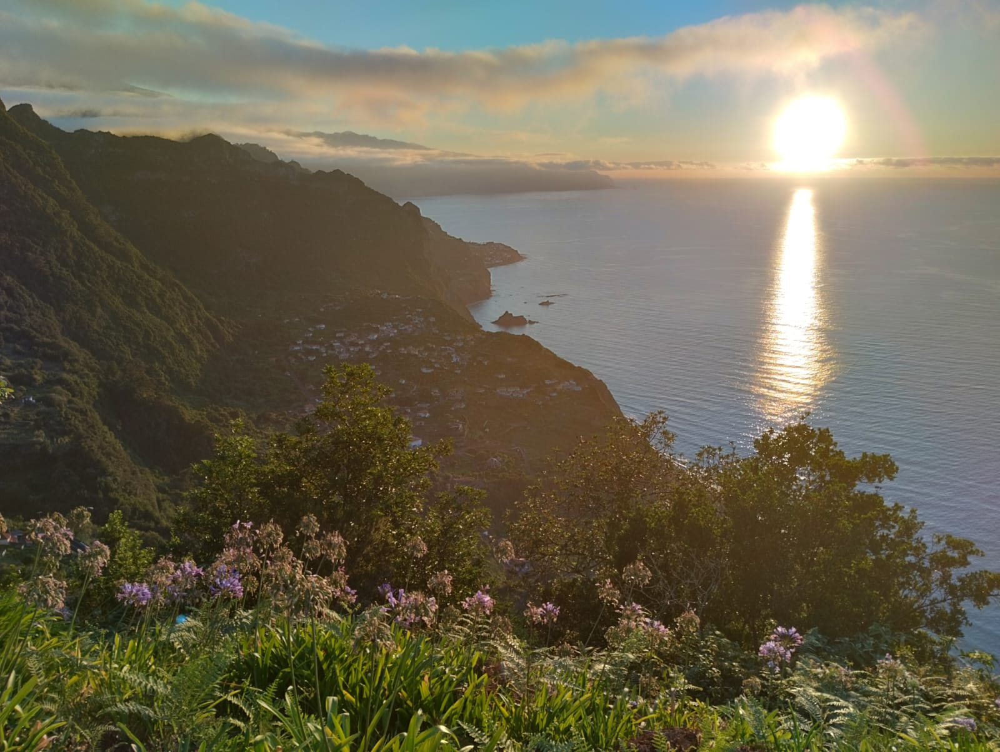

<div class="local-center">
  <div class="card">
    <div class="local-card-body">
      <h5 class="card-title hello">Hello, This is Antonio Filho Online CV</h5>
      <h5 class="card-title hello">My contacts are:</h5>
      <h6 class="card-title hello">
        By Phone or Whatapp or Telegram: 0 351 918203784.
      </h6>
      <h6 class="card-title hello">
        By Email: {{ " antonio.filho.t0116216@edu.atec.pt" }}.
      </h6>
      <p class="card-text">
        <small>If has problem with Atec Email, the backup email is, {{ " filhotony777@gmail.com " }} .</small>

      </p>
      <p class="card-text">
        Hello Pals! This a SPA Serverless in Angular 18, where I applied a lot
        of technologies. Beyond Angular 18 I used, Firebase Database, Firebase Auth, Css and BootStrap css
        and Github Deploy.
      </p>
      <p>
        If you have curiosity about this SPA and the technologies developed that
        on my own hit at <a [routerLink]="'/about'">" About. "</a>
      </p>
      <p>
        I'm going to share my personal opinion. Sorry, but I don’t believe in the idea of a "full-stack professional"
        who knows everything? No one can know it all, not even AI! I believe in specialists who are experts in specific
        technologies, working together on the backend and frontend.

        Speaking of AI, it's a great tool that relies on information from specialists, accessing their repositories. If
        specialists stop pushing new code versions to these repositories, AI will eventually become outdated.
      </p>
      <h6 class="card-title local-center">
        {{ "Now I am living a brush home, beautiful place at paradise . "
        }}<a class="nav-link" href="https://discoverportugal2day.com/visitar-arco-sao-jorge/" target="_blank">{{ "
          Hithere!" }}</a>
      </h6>
      <div class="local-img">
        
      </div>
      <div class="local-img">
        
      </div>
    </div>
  </div>
</div>